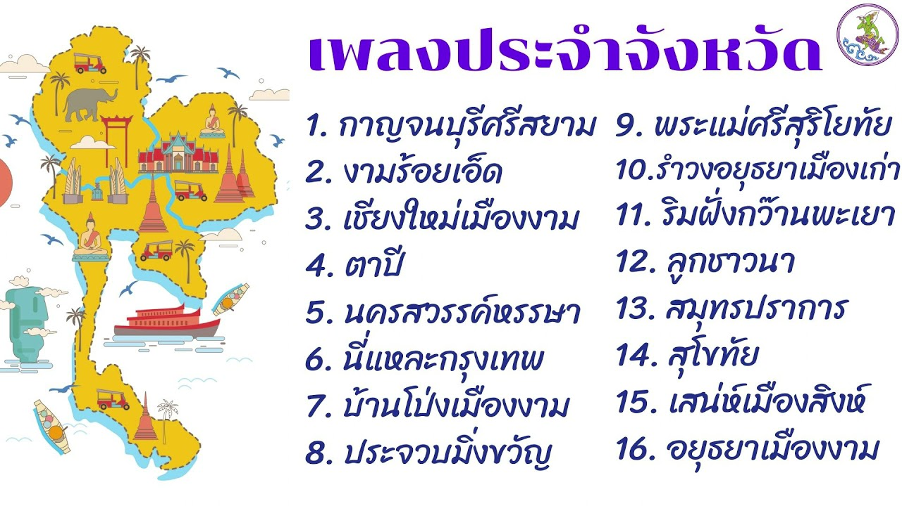

เพลงประจําจังหวัด

เพลงประจำจังหวัดกาญจนบุรีที่โดดเด่นและเป็นเอกลักษณ์ทางวัฒนธรรมคือ "เพลงเหย่ย" (หรือรำเหย่ย)ซึ่งเป็นการละเล่นพื้นบ้านเก่าแก่ที่มีอายุกว่า 500 ปี สันนิษฐานว่ามีต้นกำเนิดในเขตอำเภอพนมทวนเล่นในเทศกาลสงกรานต์หรือมงคลโดยมีการร้องโต้ตอบระหว่างชายหญิง
ลงท้ายวรรคด้วยเสียง "เอย" หรือ "เหย่ย" คู่กับกลองยาว